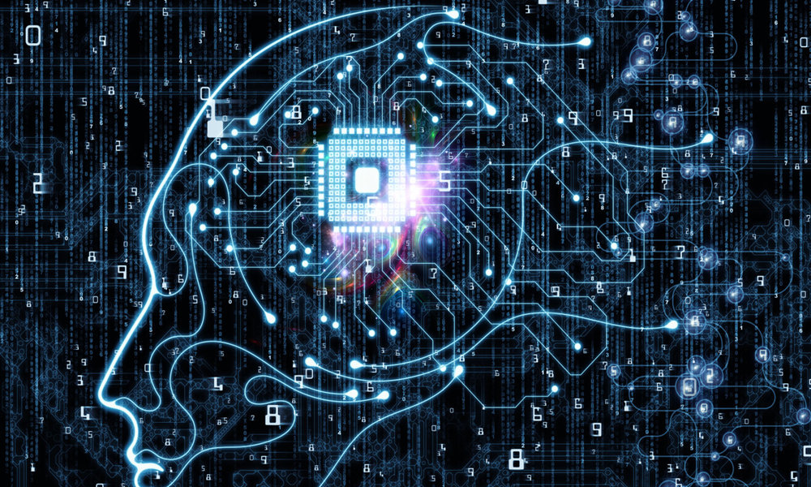

Neuralink
En 2016, Musk cofundó Neuralink, una empresa de nueva creación de neurotecnología, para integrar el cerebro humano con la inteligencia artificial. La compañía, que aún se encuentra en las primeras etapas de existencia, se centra en la creación de dispositivos que pueden implantarse en el cerebro humano, con el objetivo final de ayudar a los seres humanos a fusionarse con el software y mantenerse al día con los avances en inteligencia artificial. Estos avances podrían mejorar la memoria o permitir una interacción más directa con los dispositivos informáticos. Musk ve a Neuralink y OpenAI como empresas hermanas: “OpenAI es una organización sin fines de lucro dedicada a minimizar los peligros de la inteligencia artificial, mientras que Neuralink está trabajando en formas de implantar tecnología en nuestros cerebros para crear interfaces mente-computadora… Neuralink permite a nuestros cerebros mantenerse en la carrera de inteligencia. Las máquinas no pueden ser más astutas que nosotros. Si tenemos todo lo que tienen las máquinas más todo lo que tenemos. Al menos, eso es si usted supone que lo que tenemos es en realidad una ventaja”. EN TENTULOGO TENEMOS UN AR Neuralink fue fundada en 2016 por Elon Musk, Ben Rapoport, Dongjin Seo, Max Hodak, Paul Merolla, Philip Sabes, Tim Gardner, Tim Hanson y Vanessa Tolosa.7 En abril de 2017, el blog Wait But Why informó que la compañía tenía como objetivo fabricar dispositivos para tratar enfermedades cerebrales graves a corto plazo, con el objetivo final de la mejora humana, a veces llamado transhumanismo.8 Musk dijo que su interés en la idea surgió en parte del concepto de ciencia ficción de "cordón neural" en el universo ficticio de The Culture (La Cultura), una serie de 10 novelas de Iain M. Banks.9 Musk definió el cordón neural como una "capa digital por encima de la corteza" que no implicaría necesariamente una inserción quirúrgica extensa, sino idealmente un implante a través de una vena o arteria.10 Musk explicó que el objetivo a largo plazo es lograr "simbiosis con inteligencia artificial",11 que percibe como una amenaza existencial para la humanidad si no se controla.12 A partir de 2017, algunas neuroprótesis pueden interpretar señales cerebrales y permitir que las personas discapacitadas controlen sus brazos y piernas protésicos. Musk habló de apuntar a vincular esa tecnología con implantes que, en lugar de activar el movimiento, pueden interactuar a velocidad de banda ancha, con otros tipos de software y dispositivos externos. A partir de 2020, Neuralink tiene su sede en el Distrito Mission de San Francisco,.45 compartiendo el antiguo edificio de la fábrica Pioneer con OpenAI, otra empresa co-fundada por Musk. Musk era el propietario mayoritario de Neuralink en septiembre de 2018, pero no ocupaba un puesto ejecutivo.13 El papel de director ejecutivo desempeñado por Jared Birchall, quien también ha sido incluido como director financiero y presidente de Neuralink, y como ejecutivo de varias otras empresas que Musk fundó o cofundó, se ha descrito como formal.14 La marca comercial "Neuralink" se compró a sus propietarios anteriores en enero de 2017.15 Para agosto de 2020, solo dos de los ocho científicos fundadores permanecían en la compañía, según un artículo de Stat News que informó que Neuralink había visto "años de conflicto interno en los que las líneas de tiempo apresuradas han chocado con el ritmo lento e incremental de la ciencia".16